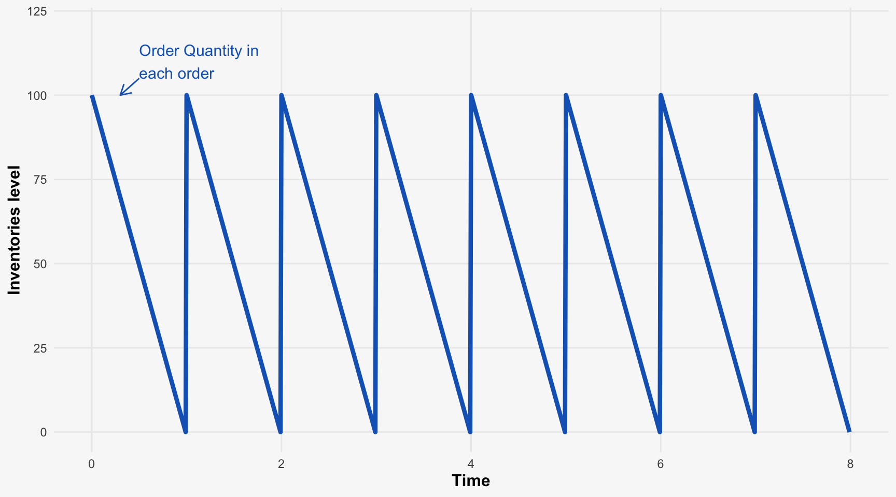
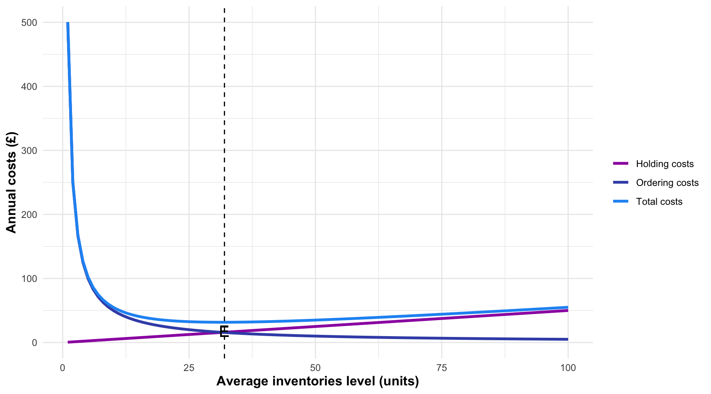

flowchart LR
A[Cash/\nbank\noverdraft] --> B[Trade\npayables]
B --> C[Raw\nmaterials]
C --> D[Work in\nprogress]
D --> E[Finished\ngoods]
E -- "Cash sales" --> A
E -- "Credit sales" --> F[Trade\nreceivables]
F -- "Cash" --> A
style A fill:#81C784,stroke:#81C784,stroke-width:1px
style B fill:#81C784,stroke:#81C784,stroke-width:1px
style C fill:#81C784,stroke:#81C784,stroke-width:1px
style D fill:#81C784,stroke:#81C784,stroke-width:1px
style E fill:#81C784,stroke:#81C784,stroke-width:1px
style F fill:#81C784,stroke:#81C784,stroke-width:1px
Working Capital Management
Day 3 - Afternoon Session
Working Capital Management
Learning Outcomes
After completing this session, you should be able to:
- Identify the main elements of working capital
- Discuss the purpose of working capital and the nature of the working capital cycle
- Explain the importance of establishing policies for the control of working capital
- Explain the factors that have to be taken into account when managing each element of working capital
Note
Effective working capital management is critical for maintaining liquidity and operational efficiency.
The Nature and Purpose of Working Capital
Working capital represents the resources a business needs to fund its day-to-day operations:
\[\text{Working Capital} = \text{Current Assets} - \text{Current Liabilities}\]
Major elements include: - Inventories - Trade receivables - Cash (in hand and at bank)
Major elements include: - Trade payables - Bank overdrafts - Short-term loans
Important
The management of working capital involves controlling the relationship between short-term assets and liabilities to ensure operational efficiency and financial stability.
The Working Capital Cycle
The working capital cycle illustrates how resources flow through a business:
Note
This cycle shows how cash is converted into various forms of current assets before returning to cash. The length of this cycle affects the amount of working capital required.
Industry Investment in Working Capital
Average investment (in days) for main working capital elements varies across industries:

Financing Cost of Inventories
Holding inventory incurs significant costs:
| Business | Type of Operations | Cost of Capital | Average Inventories Held | Financing Cost | Operating Profit | Financing Cost as % of Operating Profit |
|---|---|---|---|---|---|---|
| Associated British Foods | Food producer | 14.2% | £2,144m | £304.4m | £1,404m | 21.7% |
| BT Group | Telecoms | 8.4% | £233m | £19.5m | £20,342m | 0.1% |
| Go-Ahead | Transport | 5.2% | £17m | £0.9m | £161m | 0.6% |
| Kingfisher | DIY | 10.1% | £2,437m | £246.1m | £685m | 35.9% |
| Tesco | Supermarket | 9.5% | £2,282m | £216.8m | £1,837m | 11.8% |
Important
The cost of financing inventory can represent a significant percentage of operating profit, particularly in retail and manufacturing sectors.
Managing Inventories
Procedures and techniques for effective inventory management include:
- Forecasting future demand
- Using financial ratios to monitor performance
- Implementing recording and reordering systems
- Establishing appropriate control levels
- Applying inventory management models
- Implementing just-in-time (JIT) inventory systems
Note
The goal is to minimize inventory costs while ensuring sufficient stock to meet customer demand.
Inventory Turnover Ratio
A key measure for monitoring inventory performance:
\[\text{Average Inventories Turnover Period} = \frac{\text{Average Inventories Held}}{\text{Cost of Sales}} \times 365\]
Tip
This ratio indicates how long inventory is held before sale. A lower figure generally indicates more efficient inventory management.
Patterns of Inventory Movements
Warning: Using `size` aesthetic for lines was deprecated in ggplot2 3.4.0.
ℹ Please use `linewidth` instead.
Following this pattern, average inventory held = Order Quantity in each order/2 Number of orders placed in a year = Annual Demand/Order Quantity
Note
The sawtooth pattern represents the typical inventory cycle, where stock levels peak when an order is received and gradually decline until the next order arrives.
Inventory Holding and Order Costs
Warning in geom_text(aes(x = x[min_point], y = 0, label = "E"), vjust = -0.5, : All aesthetics have length 1, but the data has 300 rows.
ℹ Please consider using `annotate()` or provide this layer with data containing
a single row.
Total inventory costs include: - Holding costs (increasing with inventory levels) - Ordering costs (decreasing with larger order quantities) - The optimal inventory level (E) occurs where total costs are minimized
The Economic Order Quantity (EOQ) Model
The EOQ model helps determine the optimal order size to minimize total inventory costs:
\[EOQ = \sqrt{\frac{2DC}{H}}\]
Where: - D = annual demand for the inventory item (units) - C = cost of placing an order - H = cost of holding one unit for one year
Important
EOQ balances the costs of ordering against the costs of holding inventory to find the most economical order quantity.
EOQ Example
Petrov plc sells 10,000 tonnes of sand each year and demand is constant over time. The purchase cost of each tonne is £15 and the cost of placing and handling an order is estimated to be £32. The cost of holding 1 tonne of sand for one year is estimated to be £4.
Calculate the total annual cost of trading in this product.
The total annual cost consists of: 1. The cost of purchases 2. The cost of ordering 3. The cost of holding inventory
Step 1: Calculate EOQ \(EOQ = \sqrt{\frac{2 \times 10,000 \times 32}{4}} = \sqrt{160,000} = 400\) tonnes
Step 2: Calculate number of orders per year \(\text{Number of orders} = \frac{10,000}{400} = 25\) orders
Step 3: Calculate total costs - Purchase cost = 10,000 × £15 = £150,000 - Ordering cost = 25 × £32 = £800 - Holding cost = (400/2) × £4 = £800 - Total annual cost = £150,000 + £800 + £800 = £151,600
Just-in-Time (JIT) Inventory Management
JIT aims to minimize inventory levels by having materials delivered just as they are needed:
- Requires close relationships with suppliers
- May necessitate re-engineering of production processes
- Can reduce holding costs but may result in other hidden costs
- Often implemented as part of Total Quality Management (TQM)
Important
JIT can significantly reduce inventory costs but increases vulnerability to supply chain disruptions.
Managing Trade Receivables
Effective management of trade receivables involves answering key questions:
- Which customers should receive credit?
- How much credit should be offered?
- What length of credit should be offered?
- Should discounts be offered for prompt payment?
- What collection policies should be adopted?
- How can the risk of non-payment be reduced?
The “Five Cs” of credit: 1. Capital - financial resources of the customer 2. Capacity - ability to pay (cash flow) 3. Collateral - assets that can secure the debt 4. Conditions - economic environment 5. Character - willingness to pay
Sources of Credit Information
To assess creditworthiness, businesses can use:
- Trade references
- Bank references
- Published financial statements
- Credit agencies
- Register of County Court Judgments
- Information from the customer
- Other suppliers
Note
Using multiple sources provides a more complete picture of creditworthiness.
Credit Period Considerations
The length of credit offered may be influenced by:
- Typical credit terms in the industry
- Degree of competition
- Bargaining power of customers
- Risk of non-payment
- Business capacity to offer credit
- Marketing strategy
Important
The optimal credit period balances the marketing benefits of offering credit against the costs of financing receivables.
Collection Policies
Effective collection procedures include:
- Developing customer relationships
- Publicizing credit terms clearly
- Issuing invoices promptly
- Monitoring outstanding debts
- Producing aging schedules of receivables
- Addressing queries quickly
- Following up on slow payers
Monitoring Receivables Performance
The key ratio for monitoring receivables:
\[\text{Average settlement period} = \frac{\text{Average trade receivables}}{\text{Credit sales}} \times 365\]
Tip
This ratio indicates how long customers take to pay. A lower figure suggests more efficient credit management.
Managing Trade Payables
Trade payables are an important source of finance. Effective management aims to:
- Minimize administrative costs
- Maximize the benefit from this low-cost form of finance
- Maintain good supplier relationships
- Take advantage of beneficial discounts
The key monitoring ratio is:
\[\text{Payables settlement period} = \frac{\text{Trade payables}}{\text{Credit purchases}} \times 365\]
Cash Management
Reasons for Holding Cash
Businesses hold cash for three primary reasons:
- To meet day-to-day commitments
- To deal with uncertain cash flows
- To exploit profitable opportunities
Note
Effective cash management requires balancing liquidity needs against the opportunity cost of holding non-earning assets.
Factors Influencing Cash Holdings
Cash holdings are influenced by:
- The nature of the business
- The opportunity cost of holding cash
- Inflation levels
- Availability of near-liquid assets
- Access to borrowing facilities
- Cost of borrowing
- Economic conditions
- Relationships with suppliers
Cash Management Techniques
The main techniques for managing cash include:
- Controlling the cash balance (using control limits)
- Preparing projected cash flow statements
- Managing the operating cash cycle
Important
Cash management aims to maintain sufficient liquidity while minimizing idle cash balances.
The Operating Cash Cycle (OCC)
flowchart LR
A[Purchase\nof goods\non credit] --> B[Payment\nfor goods]
B --> C[Sale\nof goods\non credit]
C --> D[Cash\nreceived\nfrom credit\ncustomer]
subgraph IP["Inventories turnover period"]
A --> C
end
subgraph OCC["Operating cash\ncycle"]
B --> D
end
style A fill:#90CAF9,stroke:#90CAF9,stroke-width:1px
style B fill:#90CAF9,stroke:#90CAF9,stroke-width:1px
style C fill:#90CAF9,stroke:#90CAF9,stroke-width:1px
style D fill:#90CAF9,stroke:#90CAF9,stroke-width:1px
style OCC fill:#1976D2,stroke:#1976D2,color:white,stroke-width:2px
The operating cash cycle represents the time between paying suppliers and receiving payment from customers.
Calculating the Operating Cash Cycle
The OCC is calculated as:
\[\text{OCC} = \text{Inventory Turnover Period} + \text{Receivables Period} - \text{Payables Period}\]
Important
A shorter OCC generally indicates more efficient working capital management, as cash is tied up for less time.
The Impact of OCC Length
- The longer the OCC, the more expensive it is for the firm - cash is tied up longer
- Cash supplied to the firm has a cost (from shareholders or debt holders)
- Reducing the OCC helps reduce capital costs and improve profitability
- As a general rule, a shorter OCC is preferable to a longer one
OCC by Company Size
Research shows OCC varies by company size:
Typically have longer OCCs: - 2013: 80 days - 2015: 85 days - 2017: 88 days
Show moderate OCCs: - 2013: 66 days - 2015: 69 days - 2017: 67 days
Maintain the shortest OCCs: - 2013: 41 days - 2015: 41 days - 2017: 42 days
Note
Larger companies typically have more bargaining power with suppliers and customers, allowing them to maintain shorter OCCs.
Case Study: Calculating OCC
Orton Ltd, a distributor of frozen foods, reports the following: - Inventory: Opening £142,000, Closing £166,000 - Cost of Sales: £544,000 - Trade Receivables: £264,000 - Sales Revenue: £820,000 - Trade Payables: £159,000 - Purchases: £568,000
Inventory Turnover Period: \(\frac{(142,000 + 166,000)/2}{544,000} \times 365 = 103\) days
Receivables Settlement Period: \(\frac{264,000}{820,000} \times 365 = 118\) days
Payables Settlement Period: \(\frac{159,000}{568,000} \times 365 = 102\) days
Operating Cash Cycle: \(103 + 118 - 102 = 119\) days
The company could reduce its OCC by:
- Reducing Inventory Holding Period:
- Implement better inventory forecasting
- Use JIT where possible
- Review product range to eliminate slow-moving items
- Reducing Receivables Period:
- Tighten credit control procedures
- Offer discounts for prompt payment
- Implement more efficient invoicing systems
- Extending Payables Period (carefully):
- Negotiate longer payment terms with suppliers
- Ensure payment terms are fully utilized
- Maintain good supplier relationships
Summary
- Working capital management involves balancing current assets and liabilities
- The working capital cycle shows how resources flow through a business
- Effective inventory management requires balancing holding and ordering costs
- Trade receivables management involves credit assessment and collection policies
- Cash management aims to maintain sufficient liquidity while minimizing idle funds
- The operating cash cycle measures efficiency in working capital management
- Shorter OCCs generally indicate more efficient working capital management
Practice Questions
A company has average inventory of £500,000, annual cost of sales of £4 million, average trade receivables of £800,000, annual credit sales of £6 million, and average trade payables of £600,000 with annual credit purchases of £3.5 million. Calculate:
- The inventory turnover period
- The receivables collection period
- The payables payment period
- The operating cash cycle
Using the EOQ model, calculate the optimal order quantity for a product with annual demand of 8,000 units, ordering cost of £50 per order, and holding cost of £5 per unit per year.
Critically evaluate the advantages and disadvantages of implementing a Just-in-Time inventory system for a manufacturing business.
Discuss how a company might reduce its operating cash cycle and evaluate the potential benefits and risks of such actions.
Analyze how the “Five Cs” of credit can be used to assess customer creditworthiness, giving examples of information sources for each criterion.